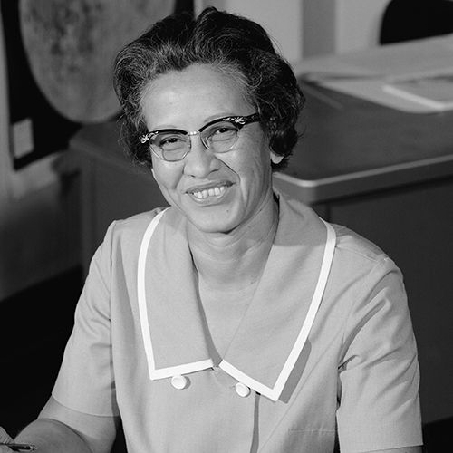

Katherine Johnson
Katherine Johnson was a pioneering mathematician whose calculations were crucial to NASA’s space missions. Born in 1918, she showed exceptional mathematical skills from an early age, attending high school at just ten years old. As one of the first African-American women at NASA, she helped calculate trajectories for **Project Mercury** and the **Apollo 11 Moon landing**. Her expertise ensured astronaut John Glenn’s successful orbit around Earth, as he insisted she personally verify the computer's calculations. Despite facing racial and gender barriers, Johnson’s brilliance and determination paved the way for women in STEM. In 2015, she received the **Presidential Medal of Freedom**, and her story was brought to light in the film *Hidden Figures*. Her legacy lives on as a trailblazer in aerospace technology, inspiring future generations to pursue careers in science, technology, engineering, and mathematics.